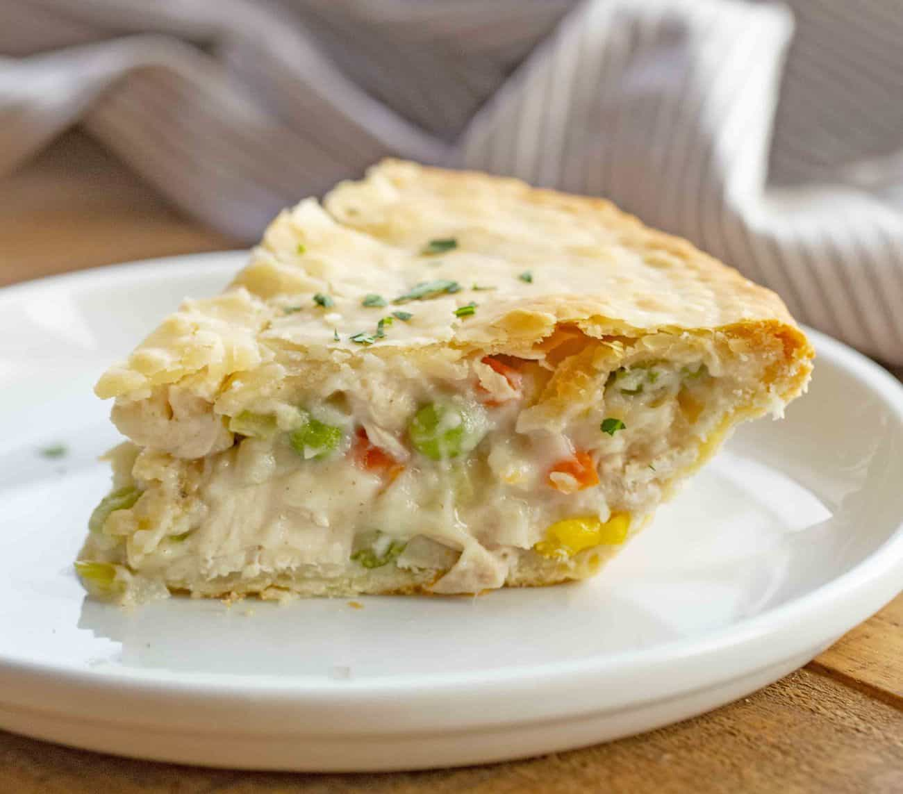

Delicous Chicken Pot Pie
Buttery Flaky Crust
Every now and again we come across a dish that our body just craves. For me that is easily a
warm, flaky, chicken pot pie. It reminds me of being a child coming in from a snow storm
and having this ready for me. The overcoming joy it brought me. I hope this recipe provides you
with this same feeling.

Prep Time: 20min Cook Time: 50min
Additional Time: 10min Total Time: 1hr 20min
Ingredients
- 1 pound skinless, boneless chicken breast halves (cubed)
- 1 cup sliced carrots
- 1 cup frozen green peas
- 1/2 sliced celery
- 1/3 cup butter
- 1/3 cup chopped onion
- 1/2 teaspoon salt
- 1/4 teaspon black pepper
- 1/4 teaspoon celery seed
- 1 3/4 cups chicken broth
- 2/3 cup milk
- 2 (9inch) unbaked pie crusts
Directions
- Preheat oven to 425F
- Combine chicken, carrots, peas, and celery in a saucepan; add water to cover
and brind to boil. boil for 15 minutes, then remove from heat and drain
- While the chicken is cooking, melt butter in another saucepan over medium heat.
Add onion and cook until soft and translucent, 5 to 7 minutes. Stir in flour, salt,
pepper, and celery seed. Slowly stir in chicken broth and milk. Reduce heat to medium low
and simmer until thick, 5 to 10 minutes. Remove from heat and set aside.
- Place chicken and vegetables in the bottom pie crust. Pour hot liquid mixture over top
Cover with top crust, seal the edges, and cut away any excess dough. Make several small slits
in the tp[ crust to allow steam to escape
- Bake in preheated oven until pastry is golden brown and filling is bubbly. This should
take about 30-35 minutes. Cool for 10 minutes before serving